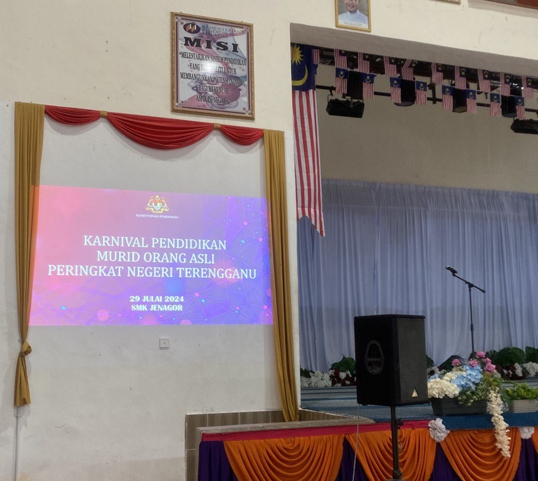

Internship Journey
I had the opportunity to complete my industrial training at Jabatan Pendidikan Negeri Terengganu (JPNT) for two months. It was an enriching experience that taught me new skills and provided exposure to a professional environment.
Programs I Handled

During my internship, I was involved in organizing multiple programs, including workshops, seminars, and events. I developed skills in teamwork, coordination, and effective communication.
My Soft Skills
My internship helped me refine my soft skills, such as problem-solving, leadership, adaptability, and interpersonal communication. These skills are essential for both personal and professional growth.